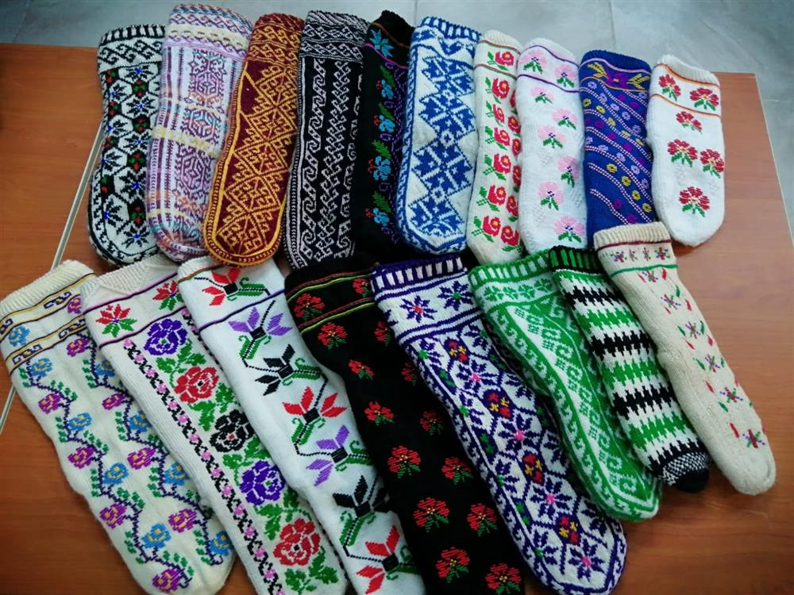

Hemşin Çorabı
Hemşin çorabı veya cimil çorabı, Rize'nin Hemşin, İkizdere ve Çamlıhemşin ilçelerinde Hemşinlilerinin giydiği yöresel bir çorap çeşididir.

Hemşin çorabının yapımında yazın koyun yünü, kışın keçi kılı kullanılmaktadır. Giyenin cinsiyetine ve yaşına bağlı olarak farklı renk ve desenlerde örülen Hemşin çorabı tek telli ve iki telli olarak ikiye ayrılmaktadır. Tek telli Hemşin çorabı renksiz, kısa ve erkeklerin giymesi için tasarlanmıştır. Kadınların giymesi için tasarlanan çift telli Hemşin çorabı ise tek telliye kıyasla daha uzundur ve çeşitli motiflerle süslenmiştir.
Çoraplar süslendiği motife göre isimlendirilmektedir. Kiraz çiçeği, çay yolu, Kibele, çiçek bahçesi, kırmızı lale, koçiboynuzu, bahçeli, papatya ve yarım gelin yanağı bu motiflerden bazılarıdır. Yöre halkı geleneksel olarak Hemşin çorabı üzerine maniler söyler bu şekilde sevgilisine seslenirler. Kullanımı gün geçtikçe azalan Hemşin çorabı eskisi kadar yaygın değildir. Geleneksel olarak yünlerin boyanmasıyla yapılan Hemşin çoraplarında günümüzde orlon ipler daha sık kullanılmaktadır. Hemşin Göleti Yaz Spor Şenlikleri ve Kültür Sanat ve Tulum Festivali'nde Hemşin çorabı örme yarışması düzenlenmektedir.
Türk Patent ve Marka Kurumu tarafından tescillenen çorap, 2021 yılında coğrafi işaret belgesi almıştır.
.png)